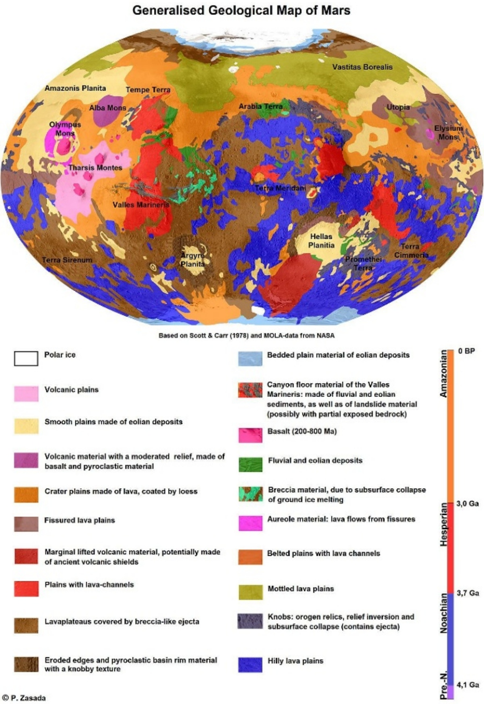

Geología Marciana
ACTIVIDAD 2: ESTUDIO GEOLÓGICO DE MARTE
- Si has ejecutado la ACTIVIDAD 1 al completo comienza en el PASO 1 de ACTIVIDAD 2.
- Si no has completado la ACTIVIDAD 1 ejecuta los pasos de la ACTIVIDAD 1 (PASO 1- > PASO 2 -> PASO 6 -> PASO 7) antes de comenzar la ACTIVIDAD 2:
PASO 1: |
|
|
1- Recordamos los distintos periodos geológicos de Marte y sus características (Ver Introducción para estudiantes) 2- Remarca la palabra correcta:
|
El periodo Noaico es el más (antiguo/reciente) y las grandes cantidades de agua líquida de su superficie excavaron túneles y ríos en la superficie.
El periodo Hespérico se reconoció por (gran/poca) actividad volcánica y (grandes/pocos) depósitos de lava. El agua era más ácida y menos extendida.
El periodo Amazónico es el más (antiguo/reciente) en el que (había/no había) campo magnético en Marte. Por este motivo el agua (H2O) se encuentra separada en moléculas de hidrógeno (H2) y de oxígeno (O2) en su atmósfera. |
PASO 2: |
|
|
A partir de lo anterior y mirando los datos científicos de Marte sabemos que: |
|
PASO 3: |
|
|
Busca en Google Earth -Mars las siguientes zonas de Marte e identifica sus periodos geológicos |
- Huygens Crater pertenece al periodo geológico …… - Promethei Terra pertenece al periodo geológico …… - Olympia Planum pertenece al periodo geológico …… - Nilus Mesae pertenece al periodo geológico …… |
PASO 4: |
|
|
1- Compara los resultados de los periodos identificados (PASO 3, mirando las imágenes en Google Earth Pro – Marte) con el siguiente mapa geológico de Marte de la USGS |
|
